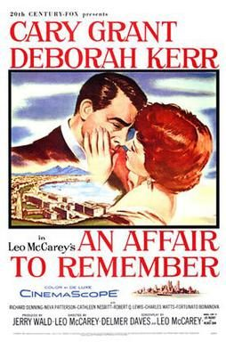

An Affair to Remember
1957 film by Leo McCarey
An Affair to Remember is a 1957 American romance film directed by Leo McCarey and starring Cary Grant and Deborah Kerr. Filmed in CinemaScope, it was distributed by 20th Century Fox. It is considered among the most romantic films ever according to the American Film Institute. The film was a remake of McCarey's 1939 film Love Affair, starring Irene Dunne and Charles Boyer.
Previous Showings
14 Runs • 7 Festivals
28,079 tickets sold
Original Billings: 1 run (August 2, 1957)
Original Run: August 2, 1957 (Friday - Thursday)
All runs on record (14):
- August 2, 1957 (Friday - Thursday) · Cary Grant, Deborah Kerr
- September 26 - 29, 1992 · 2,660 tickets · w/ To Catch a Thief
- July 23 - 27, 1993 · 5,547 tickets · w/ To Catch a Thief
- September 9 - 13, 1995 · 2,133 tickets · w/ To Catch a Thief
- August 29 - 30, 1996 · 1,272 tickets · w/ To Catch a Thief
- June 27 - July 1, 1997 · 1,604 tickets · w/ Three Coins in the Fountain
- September 8 - 10, 1999 · 965 tickets · summer99 · w/ Holiday
- July 13 - 19, 2002 · 4,688 tickets · summer02 · w/ To Catch a Thief
- September 10 - 13, 2005 · 1,535 tickets · Summer 2005 · w/ Waterloo Bridge
- September 29 - October 1, 2006 · 1,923 tickets · 20th Century-Fox 2006 · w/ The King and I
- October 23 - 24, 2009 · 873 tickets · 20th Anniversary Festival · w/ Bringing Up Baby
- September 17 - 23, 2011 · 1,814 tickets · Summer 2011 · w/ Bringing Up Baby
- August 31 - September 2, 2018 · 1,283 tickets · w/ Father of the Bride
- August 12 - 13, 2023 · 1,782 tickets · Summer 2023: The Best of Cary Grant and Alfred Hitchcock · w/ To Catch a Thief